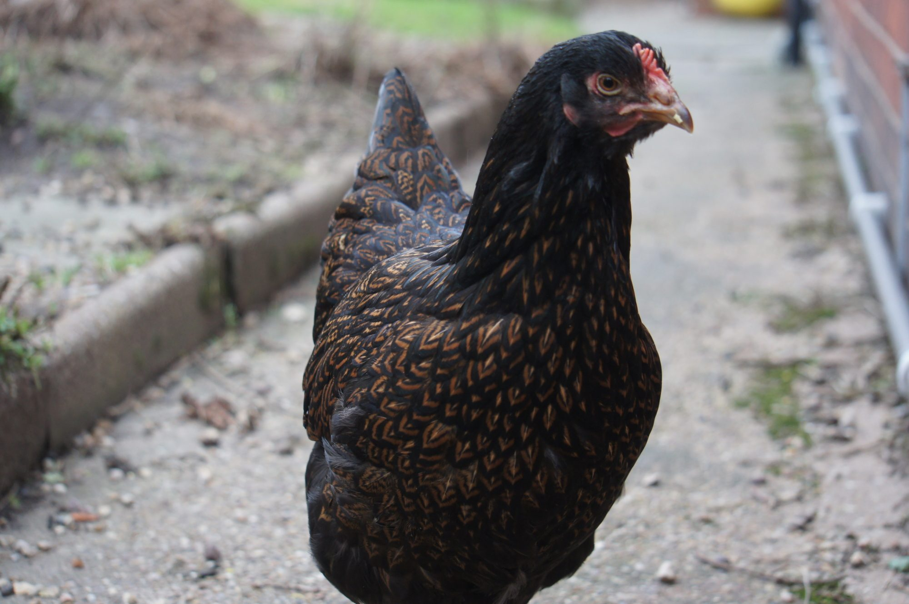

Dual-Purpose Breeds: These are breeds raised for both egg
and meat production. They produce eggs in reasonable quantity
but they are large chicken breeds, hence they are good meat producers.
Examples are;
Noiler

Sussex chicken is a soft-feathered, docile chicken breed.
Although they have the ability to produce eggs, they are
mainly used for meat production.
Rhode Island Red
Rhode Island Red is one of the best chicken breeds in the world;
they are genetically bred to serve a dual purpose. they are good egg
producers and are good converter of feed to meat.
Knowing these chicken breeds aids selection for different production purposes;
now am pleased you can identify these chicken breeds with pictures anywhere you find them.